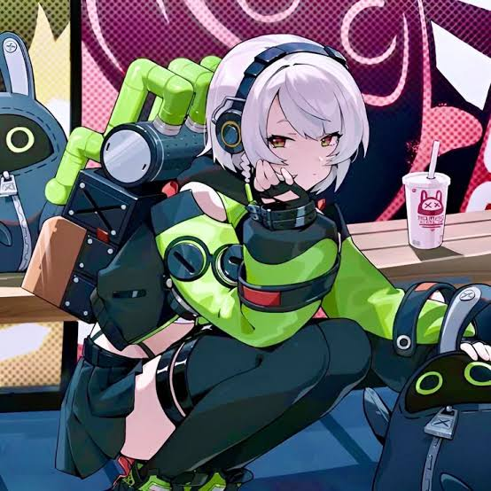

Anby Demara
| Nama | Anby Demara |
|---|---|
| Panggilan | Anby |
| Faksi | Cunning Hares |
| Ulang Tahun | 20 Februari |
| Kelamin | Perempuan |
| Spesies | Manusia (buatan) |
Penjelasan
Seorang gadis muda misterius yang tidak pernah membicarakan masa lalunya karena mengandung banyak kenangan buruk. Anby memiliki sifat yang tenang dan kalem. Anby juga sangat kompeten dan efisien dalam pertempuran, seakan-akan kalau dia sudah pernah menjalani pelatihan selama bertahun-tahun. Dalam kisahnya, Nicole tidak sengaja menemukannya dalam keadaan kritis dan kemudian memutuskan untuk membawanya ke Cunning Hares. Anby suka menonton film. Tetapi karena kurangnya akal sehat, anby selalu menganggap film sebagai kisah nyata.
Kembali